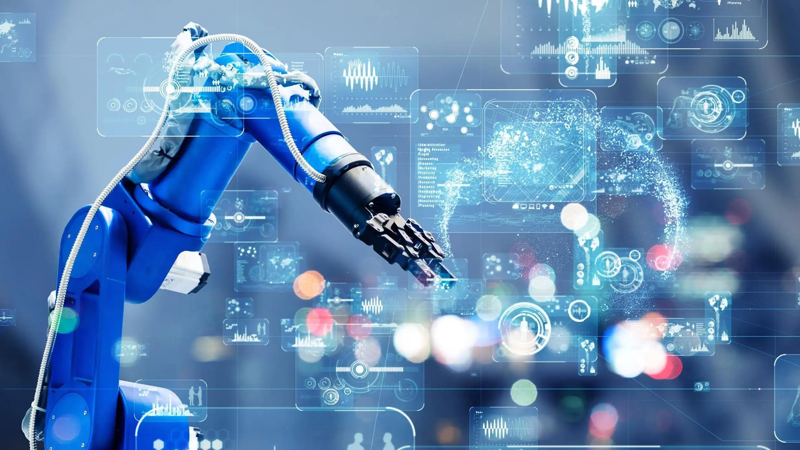

Introducción
La inteligencia artificial (IA) ha emergido como una herramienta fundamental para transformar los procesos industriales en todos los sectores. Desde la automatización de tareas repetitivas hasta la optimización de operaciones mediante el análisis de grandes volúmenes de datos, la IA está impulsando la productividad y abriendo nuevas oportunidades de innovación. Su adopción ha permitido el desarrollo de tecnologías avanzadas como el aprendizaje automático, la visión por computadora y la robótica colaborativa, que están revolucionando áreas como la manufactura, la logística y la atención al cliente.
Además, la IA no solo está mejorando la eficiencia y reduciendo costos, sino que también está facilitando la transición hacia modelos de negocio más sostenibles y personalizados. Sin embargo, su implementación plantea desafíos éticos y regulatorios, como el impacto en el empleo, la privacidad de los datos y la transparencia en la toma de decisiones automatizadas. En este contexto, es crucial explorar no solo las aplicaciones actuales de la IA, sino también su impacto futuro en la sociedad y la industria.
Historia de la IA
La evolución experimentada por la Inteligencia Artificial en los últimos años ha permitido su incorporación en la mejora y automatización de múltiples procesos, afectando a todos los sectores. Esto, ha proporcionado ventajas competitivas, antes, inimaginables.
Dada la importancia de la Inteligencia Artificial, vamos a contextualizar su origen
Si nos centramos en la Visión Artificial (técnica o por computadora), comenzó con los experimentos de neurocientíficos realizados en 1959. Aquí se descubrió que el procesamiento de imágenes en el cerebro humano comienza con formas simples.
Tan solo 4 años más tarde, en 1963, en el plano académico, la Inteligencia Artificial fue capaz de interpretar la tridimensionalidad a partir de una imagen plana.
Años más tarde, en 1974, OCR apareció ayudando a interpretar el texto escrito en “cualquier” superficie.
Y fue, en 1980, gracias a Kunihiko Fukushima, cuando pudimos empezar a hablar de redes neuronales capaces de reconocer visualmente patrones.
Entrando en el nuevo milenio, año 2.000, se implantó el reconocimiento facial en tiempo.
Una década más tarde, en 2.010, comenzamos a disponer de conjuntos de datos (imágenes etiquetadas) que permitieron la clasificación de objetos a través de redes neuronales (ImageNet, COCO).
Desde ese momento hasta la actualidad, las redes neuronales convolucionales y, más recientemente, los Transformers, han dado entrada a nuevas arquitecturas, haciendo evolucionar esta tecnología a pasos agigantados.
Esto está provocando que disciplinas como las matemáticas, la física, la química y la medicina, entre otras, persigan el sueño de imitar el funcionamiento del cerebro humano.
Esta evolución de la tecnología, y con ella, de la Inteligencia Artificial, está haciendo que, día tras día, los seres humanos, y más concretamente, los negocios, podamos optimizar todas nuestras funciones consiguiendo unos resultados mejores, más rápidos y fiables.
Aplicaciones de la Inteligencia Artificial
La inteligencia artificial (IA) ha revolucionado numerosos sectores industriales, transformándose en una herramienta indispensable para optimizar procesos, reducir costos y aumentar la capacidad de innovación. En la manufactura, por ejemplo, la IA se emplea en el mantenimiento predictivo, ayudando a las empresas a prevenir fallos en las máquinas y a reducir tiempos de inactividad, lo que incrementa la eficiencia y disminuye los costos operativos (Russell & Norvig, 2021). Además, la visión artificial ha mejorado los controles de calidad en líneas de ensamblaje, detectando defectos con mayor precisión que los métodos tradicionales.
En el ámbito de la logística, los algoritmos de aprendizaje automático están marcando una diferencia significativa al permitir la optimización de rutas de transporte, lo que no solo reduce los costos, sino también las emisiones de carbono (Marr, 2020). Además, la gestión de inventarios ha evolucionado gracias a sistemas inteligentes que predicen la demanda de productos con una precisión sin precedentes. Esto es especialmente útil en sectores como el comercio minorista, donde una buena gestión del inventario puede determinar el éxito de la operación.
En el sector de la salud, la inteligencia artificial está desempeñando un papel crucial en el diagnóstico asistido por computadora y el análisis de imágenes médicas, ayudando a los profesionales a detectar enfermedades como el cáncer en etapas tempranas (Goodfellow, Bengio & Courville, 2016). También se utiliza en el desarrollo de medicamentos, donde los modelos basados en IA están acelerando el descubrimiento de compuestos terapéuticos, reduciendo los plazos y costos tradicionales.
Por otro lado, en el sector energético, la IA está optimizando el consumo de recursos al analizar datos en tiempo real de redes eléctricas, permitiendo una gestión más eficiente y sostenible (Tegmark, 2017). También está fomentando el uso de energías renovables al prever patrones de generación y consumo, ayudando a equilibrar la oferta y la demanda de energía.
Finalmente, en áreas como la atención al cliente, la inteligencia artificial ha permitido la creación de chatbots avanzados que ofrecen respuestas rápidas y personalizadas, mejorando la experiencia del usuario. El análisis de sentimientos y las recomendaciones personalizadas también están transformando la forma en que las empresas interactúan con sus clientes, creando relaciones más sólidas y efectivas (Brynjolfsson & McAfee, 2014).
A medida que estas tecnologías continúan evolucionando, queda claro que la inteligencia artificial seguirá siendo un motor clave de transformación industrial, ayudando a las organizaciones a enfrentar los desafíos del futuro con soluciones innovadoras y sostenibles.
Referencias
- Russell, S., & Norvig, P. (2021). Artificial Intelligence: A Modern Approach. Pearson.
- Goodfellow, I., Bengio, Y., & Courville, A. (2016). Deep Learning. MIT Press.
- Marr, B. (2020). Artificial Intelligence in Practice: How 50 Successful Companies Used AI and Machine Learning to Solve Problems. Wiley.
- Brynjolfsson, E., & McAfee, A. (2014). The Second Machine Age: Work, Progress, and Prosperity in a Time of Brilliant Technologies. W.W. Norton & Company.
- Tegmark, M. (2017). Life 3.0: Being Human in the Age of Artificial Intelligence. Penguin Books.
- Bravent. (s.f.). Inteligencia Artificial en el sector industrial: Historia y casos de uso. Recuperado de 2025, de https://www.bravent.net/noticias/inteligencia-artificial-en-el-sector-industrial-historia-y-casos-de-uso/